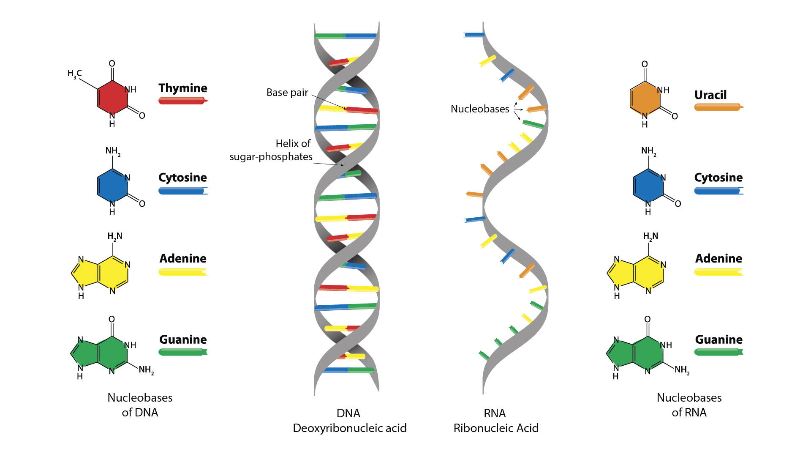
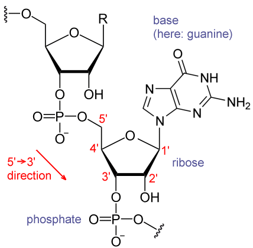
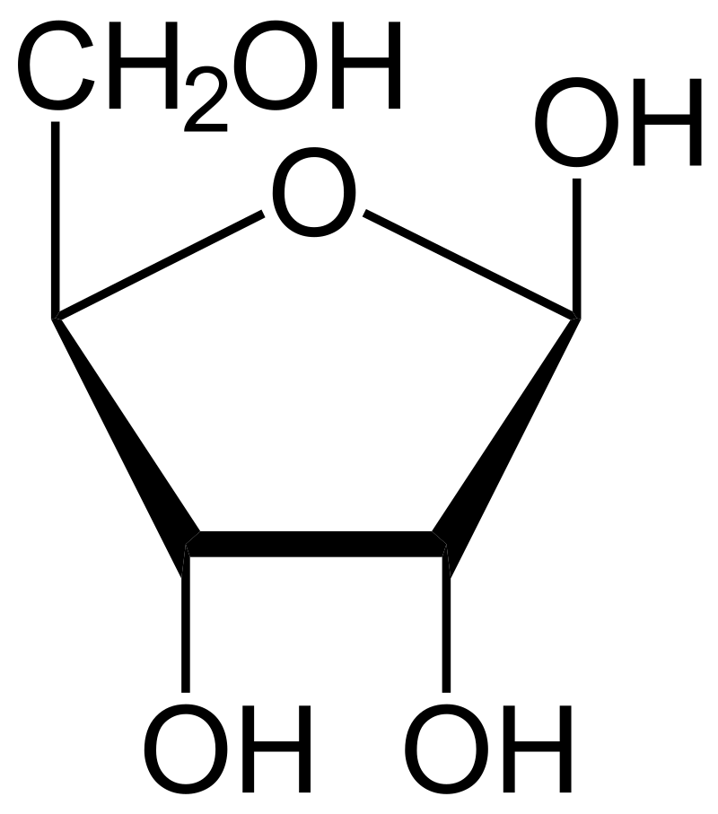

RNA
RNA is made up by Sugar, Phosphate Group and Nitrogenous Base
Components:
Sugar
5-carbon Ribose sugar, carbon labelled from 1' to 5' clockwise
Phosphate Group (PO4)
Attached on 5' carbon of the Ribose sugar with easter bond
Nitrogenous Base
Attached on 1' carbon of the Ribose sugar with glycosidic bond.


Sugar
Ribose is a monosaccharide that has 5 carbons.
Function in Metabolism
Ribose has it's involvement in intracellular energy transfers.
NAD, FAD, NADP all contains the D-ribofuranose moiety, which is derived from D-Ribose, and NAD, FAD and NADP are electron acceptors in redox reactions in metabolic passways.

Nitrogeneous bases
Pyramidines
- Has Single Ring
Purine
- Has Double Ring
RNA has Uracil instead of Thymine because Cytosine can spontaneously deaminate to form Uracilbases, which may result in undetectable mutation in DNA.So a methyl group is added to DNA to allow DNA repair mechanism identify illegimate U.
RNA doesn't need it because of it's short life.
Back